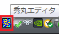
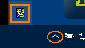
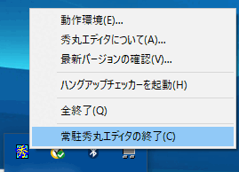
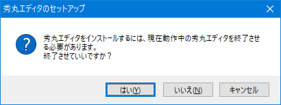

[HME0053A]
●「常駐秀丸の終了」がわかりません

- 秀丸エディタのインストールファイルや、「HMSETUP.EXE」を実行すると「常駐秀丸を含めてすべての秀丸エディタを終了させろ」と言われてしまいました。「常駐秀丸の終了」って、どうやれば良いのですか？

-
タスクバーの右端に秀丸エディタのアイコンが表示されていますね。そのアイコンをマウスで右クリックし、一番下にある「常駐秀丸の終了」を選択します。
Windows Vista の場合

Windows10 の場合は まとめられているので矢印?(∧)をクリックしないと出てこない場合もあります。

右クリックで表示されるメニューです。

現時点(Ver.9.32)では、インストール時に秀丸エディタの起動状態をチェックし、起動中の場合は、常駐秀丸エディタを含め終了させることも出来ます。
